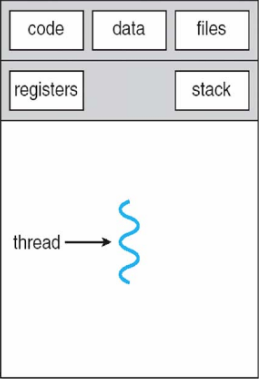
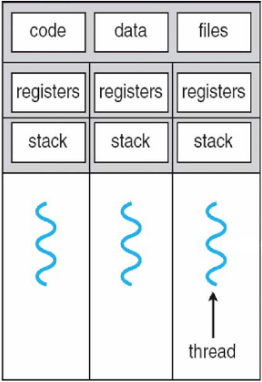
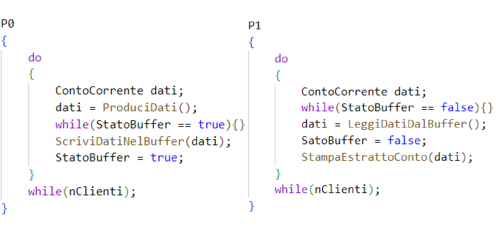
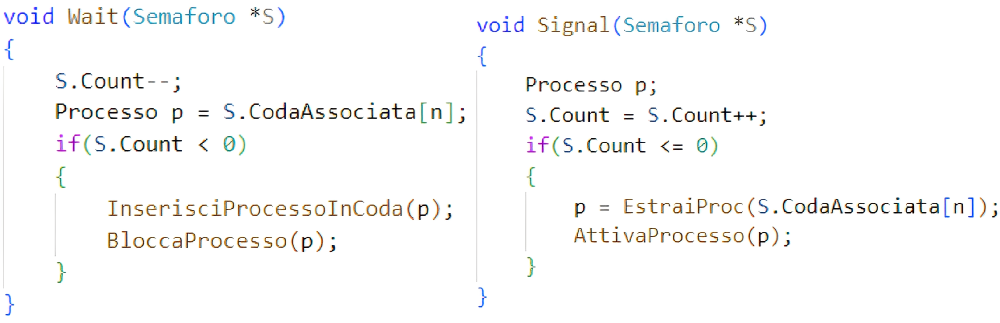
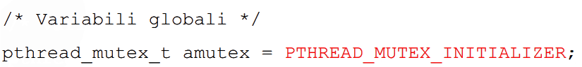
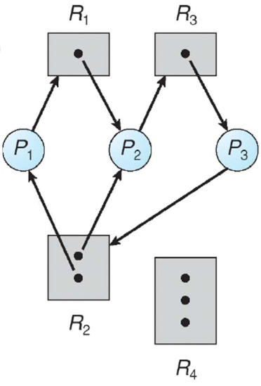
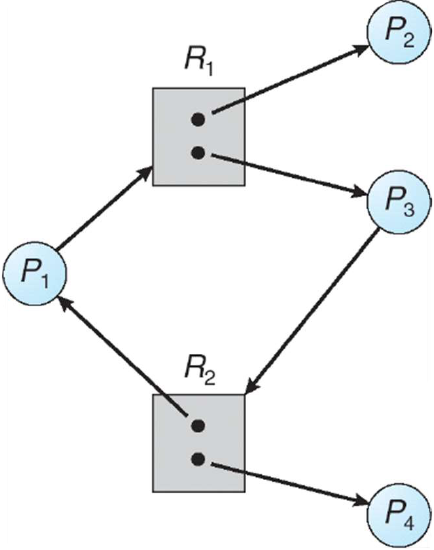

Context-Switch: Il context-switch è una particolare operazione del sistema operativo che conserva lo stato del processo o thread in una tabella chiamata PCB (process control block), in modo da poter essere ripreso in un altro momento. Questa attività permette a più processi di condividere la CPU, ed è anche una
caratteristica essenziale per i sistemi operativi multitasking.
Il context-switch tra thread è molto più veloce di quello tra processi poichè essendo i dati in condivisione, non bisogna passarli nella PCB.
Nella PCB dei processi vengono passati: Process Id, Process state, Process Priority, Accounting Information, Program counter, CPU register, PCB pointers.
Tecnologie e progettazione di sistemi informatici e di telecomunicazioni
Salve, mi chiamo Lorenzo Fiore e sono uno studente di quarta superiore presso l'istituto tecnico ISIS J.M. Keynes di Gazzada Schianno. Questo sito sarà una dispensa di quello che ho fatto nel periodo scolastico 2022-2023 riguardo alla materia informatica di nome TePI. Gli argomenti sono indicizzati qui sotto e sono approfonditi nelle apposite sezioni della pagina a cui ci si può riferire attraverso il menu in alto.
Argomenti
- I 10 personaggi che hanno fatto l'informatica
- La comunicazione tra processi e thread
- La comunicazione con memoria condivisa
I 10 personaggi che hanno fatto l'informatica
Durante la pre season dell'anno scolastico ho scoperto la vita di 10 personaggi che hanno 'costruito' l'informatica come la conosciamo oggi, studiando in particolare cosa hanno fatto per contribuire all'avanzamento di questa incredibile risorsa di cui sicuramente, come i primitivi trattavano il fuoco, ne stiamo sfruttando una piccola parte delle potenzialità. I personaggi affrontati, in ordine cronologico sono:
- Ada Lovelace, la prima informatica della storia e colei che ha creato il primo programma informatico
- Alan Turing, il matematico che ha decifrato i codici di Enigma e colui che ha definito l'AI
- Steve Jobs, il fondatore di Apple e Pixar inoltre il creatore del primo PC della storia
- Bill Gates, il fondatore di Microsoft nonchè creatore del MS-DOS e successivo Windows
- Tim Berners-Lee, l'ideatore del browser che utilizza il linguaggio HTML e i protocolli HTTP e URL
- Yang e Filo, i creatori del primo motore di ricerca, Yahoo
- Page e Bin, i creatori del più grande motore di ricerca, Google
- Anonymous, l'ideologia che combatte per la difesa della libertà di pensiero e di espressione attraverso l'informatica
- Mark Zuckemberg, Il fondatore di Meta nonchè di Facebook
- Edward Snowden, l'informatico e attivista che combatte contro l'abuso di potere in ambito informatico del governo americano e britannico
La comunicazione tra i thread e i processi
Processo: un processo è un programma in memoria di massa che viene mandato in esecuzione nella cpu. Quando un programma viene mandato in esecuzione si dice istanza. L'idea di utilizzare i processi è nata per la multiprogrammaione, ovvero la possibilità di avere più cpu dette virtuali che eseguono processi diversi allo stesso momento. In realtà la multiprogrammazione non esiste, poichè nel caso avessimo un solo core, le cpu virtuali sono tutte la stessa cpu che è molto veloce a effettuare i context-switch. Ogni processo ha un proprio program counter (PC), ovvero un contatore alla linea successiva di codice che la cpu dovrà eseguire.
Thread: un thread è un flusso di esecuzione all'interno di un processo che ha un proprio program counter (PC). All'interno di uno stesso processo si possono avere più thread che possono essere eseguiti da un solo processore oppure da più processori (multicore). I thread all'interno di uno stesso processo condividono l'area codice, la pcb, il controllo file e i dati. Inoltre i thread possono leggere, scrivere e cancellare lo stack degli altri, proprio per questo si dice che si possono vedere tra di loro.
Il Context-Switch tra thread e processi
Le tipologie di thread
Una delle classificazioni più importanti dei thread consiste nel differenziarli tra Foreground e Background.
Un thread è foreground se una volta terminato il thread principale, esso continua a essere eseguito. In poche parole il processo prima di terminare deve aspettare che tutti i thread foreground terminino.
Un thread è background se una volta terminato il thread principale anch'esso termina. In poche parole appena il thread principale termina anche il processo termina.
I thread hanno inoltre una classificazione per livelli, ovvero esistono thread a Livello utente (molti a uno), thread a Livello kernel (uno a uno) e thread Ibridi, ovvero di cui il programmatore ne sceglie se essere Utente o Kernel. Qui sotto una tabella che elenca le differenze tra le due tipologie.
| BASE DI CONFRONTO | FILETTATURA LIVELLO UTENTE | KERNEL LEVEL THREAD |
| Descrizione | Il supporto fornito a livello utente viene definito thread a livello utente . | Il supporto fornito dal kernel è indicato come thread a livello di kernel. |
| Mappatura dei thread | Il thread a livello utente è anche chiamato thread di mapping molti-a-uno perché il sistema operativo mappa tutti i thread in un processo multithread a un singolo contesto di esecuzione. Il sistema operativo considera ogni processo multithread come una singola unità di esecuzione. | I thread a livello di kernel supportano il mapping dei thread uno a uno. La mappatura richiede ogni thread utente con thread kernel. Il sistema operativo esegue questa mappatura. |
| Esempi | Esempi di librerie di thread utente includono: POSIX Pthreads, Mach C-thread e Solaris 2 UI-thread. | Esempi di thread a livello di kernel includono: Windows NT, Windows 2000, Solaris 2, BeOS e Tru64 UNIX (precedentemente UNIX digitale) |
| Tempo cambio contesto | Il tempo di cambio di contesto è inferiore. | Il tempo di cambio di contesto è più. |
| Velocità | I thread a livello utente sono più veloci dei thread a livello di kernel. | I thread a livello di kernel sono più lenti dei thread a livello utente. |
| Multithreading | L’applicazione multithread non può sfruttare il multiprocessing. | Le routine del kernel stesse possono essere multithread. |
| Supporto hardware | Il cambio di contesto richiede il supporto hardware | È necessario il supporto hardware. |
| Implementazione | L’implementazione dei thread utente è semplice. | L’implementazione del thread del kernel è complicata. |
| Sistema operativo | Il livello utente può essere eseguito su qualsiasi sistema operativo. | I thread a livello di kernel sono specifici del sistema operativo. |
| Codice dell’applicazione | Il codice per creare e distruggere il thread, il passaggio dei messaggi, il trasferimento dei dati e la pianificazione dei thread è incluso nella libreria dei thread. | Il codice di gestione dei thread non è incluso nel codice dell’applicazione. È l’unica API per il thread del kernel. Il sistema operativo Windows utilizza questa funzione. |
| Chiamate di sistema | I thread a livello utente non richiamano il kernel per la decisione di pianificazione. | I thread sono costruiti e controllati da chiamate di sistema. Il sistema conosce lo stato di ogni thread. |
| Spazio operativo | Il thread a livello utente utilizza lo spazio per la pianificazione del thread. I thread sono trasparenti per il sistema operativo. | Il kernel esegue la pianificazione su base thread. Il supporto del kernel e la creazione del thread di gestione avviene solo nello spazio del kernel. |
Gli stati di un thread
- Ready: in attesa di essere assegnato alla cpu
- Running: in esecuzione dalla cpu
- Waiting: in attesa di un evento
- Sleeping: sospeso per un quantitativo di tempo
- Blocking: in attesa di completare un I/O
- Dead: istruzioni terminate
Le operazioni eseguibili sui thread
Il programmatore ha a disposizione diversi strumenti per controllare i thread, qua sotto sono elencate con il nome dell'azione che compiono e la corrispondente funzione in Java e C#.
- thread_create "start()": un thread chiede di crearne uno nuovo
- thread_exit "abort()": un thread termina se stesso
-
thread_join "join()": un thread sincronizza la sua fine con quella di un altro,
appena l'altro finisce manda una notify ad esso - thread_yeld "yeld()": rilascia la cpu ad un altro thread in coda
- thread_sleep "sleep()": ferma il thread per un quantitativo di tempo, spesso in millisecondi
La comunicazione con la memoria condivisa
Qui sotto un indice degli argomenti di cui si tratta nello studio della comunicazione con la memoria condivisa da parte dei processi:
La comunicazione tra processi e thread che hanno memoria condivisa
Quando più processi hanno una risorsa condivisa su cui possono agire contemporaneamente, lo stato finale di essa viene deciso dall'ordine in cui i processi vi accedono. In poche parole si rischia di non avere il risultato desiderato perchè i processi non hanno sguito l'ordine che ci si aspettava. Facciamo un esempio.
Supponiamo di avere due processi, P0 e P1.
P0 produce dati del cliente per n clienti e li inserisce nel buffer mentre P1 legge i dati dal buffer e li stampa a schermo.
Come si può vedere nell'immagine sotto, dato che i due processi non sono sincronizzati tra di loro, può accadere che P1 legga i dati prima di essere stati effettivamente
cambiati nel buffer da P0, dando in questo caso un saldo nel contocorrente n.130 che non è quello reale di quella persona ma è quello del conto 125, infatti dovrebbe essere 2000
ma è rimasto 3500.
Corsa critica, sezione critica e mutua esclusione
Si dice corsa critica quella situazione dove due o più processi accedono a dati condivisi e il risultato dell'elaborazione dipende dall'ordine di esecuzione dei processi.
Si dice sezione critica o regione critica la parte di codice dove può avvenire la corsa critica, ovvero la parte di codice che accede alla memoria condivisa.
Per risolvere questo problema si ha bisogno della mutua esclusione dei processi che consiste nel far entrare un processo alla volta nella propria sezione critica. Per esempio, se P0 è nella sua sezione critica, allora P1 non potrà entrare nella propria.
Per avere la mutua esclusione si necessita di 6 condizioni:
- un solo Processo o Thread accede alla sezione critica;
- nessun processo può bloccarsi in sezione critica;
- non ci sono deadlock e starvation;
- non viene fatta nessuna assunzione sulla velocità dei processi;
- nessun processo fuori dalla sezione critica può impedire a un altro di entrare;
- l'accesso alla sezione critica è consentito in un tempo definito.
Soluzione con variabile booleana
Un modo per risolvere il problema della mutua esclusione è l'utilizzo di una variabile booleana che decide quale dei due processi può entrare nella sezione critica. Consideriamo una variabile booleana StatoBuffer e se questa vale TRUE significa che il Buffer è pieno, altrimenti se vale FALSE il Buffer è vuoto. Ovviamente la variabile StatoBuffer in questo caso deve essere inizializzata a false, poichè il buffer è inizialmente vuoto.
Busy Waiting
Il problema di questa soluzione sta nei due while interni che provocano quella che si chiama 'attesa attiva' o Busy-Waiting. In sostanza, se la condizione non è verificata, il processore continua a lavorare testandone ciclicamente il verificarsi. Questo provoca spreco dirisorse e cioè di tempo di CPU ed è da evitare. Vediamo come risolvere questo problema attraverso i semafori.
Il semaforo
Un semaforo è un tipo di dato astratto che permette la gestione organizzata dell'accesso di 2 o più processi/thread a una sezione critica.
Si compone di due parti:
- Una variable intera contatore
- Una coda di processi associata
Un semaforo può essere di 2 tipologie: counter e mutex.
- counter se può assumere anche valori > 1 e quindi permettere di eseguire più thread alla volta
- mutex se assume valori da 0 a 1 e nel caso un thread fa una lock (wait) con cont == 0, esso viene bloccato fino a che cont non ritorni a 1
Il thread/processo può eseguire tre operazioni su un semaforo: create, wait, signal o post. Queste funzioni vengono dette atomiche poichè non possono essere interrotte mentre eseguite. Qui a fianco gli pseudocodici di wait e signal.
Come si nota dai codici, quando un thread fa una wait su un semaforo, il suo contatore viene decrementato e nel caso:
- S.Cont >= 0 il thread può essere eseguito non essendo nessun altro thread in coda
- S.Cont < 0 il semaforo ha una coda, un thread è gia in esecuzione e quindi questo thread viene accodato e bloccato con numero di coda uguale a valore assoluto di S.Cont, per esempio -2 sarà il secondo ad essere eseguito finito quello in esecuzione
Sempre guardando il codice, si può notare che la signal corrisponde ad un aumento del contatore del semaforo e nel caso:
- S.Cont > 0 non bisogna eseguire nessun altro thread essendo la coda del semaforo vuota
- S.Cont <= 0 avendo il semaforo almeno un processo in coda, esso viene estratto ed eseguito
Esempio
Per fare un esempio, affidiamoci alle immagini in basso a destra. Quella in alto è il processo principale, quelle sotto sono un processo 0 e un processo 1 che devono accedere a una sezione critica.
Il Count viene inizializzato a 1, perché se lo inizializzassimo a 0 i due processi entrerebbero subito in stato di Wait e nessuno li riattiverebbe.
- P1 arriva prima alla fase di Wait ed esegue la Wait.
- Il Count del Semaforo Mutex viene decrementato. Da 1 diventa 0.
- Non è minore di zero, di conseguenza esce dalla funzione senza entrare nell'if ed entra nella sua sezione critica.
- Nel mentre P0 arriva ad eseguire la sua Wait sullo stesso semaforo.
- Il Count di Mutex viene decrementato ancora. Da 0 passa a -1.
- È minore di zero, quindi entra nell'if e il processo P0 viene messo in coda.
- P1 esce dalla zona critica ed entra nella Signal.
- Il Count di Mutex viene incrementato. Da -1 diventa 0.
- Il Count è uguale a zero quindi riattiva P0 .
- P0 entra nella sua zona critica, la esegue, esce da questa, esegue la Signal e il Count torna a 1 ed è pronto per altre esecuzioni.
L'esempio proposto permette la mutua esclusione tra due o più processi/thread, poichè il contatore non è stato inizializzato a 0. Nel caso questo fosse accaduto, il semaforo non avrebbe funzionato tuttavia qualche volta è utile lo stesso farlo, bisogna solo cambiare l'implementazione delle funzioni atomiche nei codici dei processi. Infatti se si inizializza il Count a 0, lo si fa per sincronizzare i processi, non per escluderli mutualmente. Per sincronizzare si intende per esempio far partire un processo quando l'altro è finito. Vediamo un esempio:
- P0 arriva per primo all'istruzione di Wait.
- l Count del semaforo S viene decrementato. Da 0 passa a -1.
- Valendo -1 il processo P0 viene messo nella coda del Semaforo S.
- P1 esce dalla procedura “RilevaEvento” perché sta arrivando un treno ed esegue la Signal su Semaforo S.
- Il Count del semaforo S viene incrementato. Da -1 diventa 0.
- Essendo uguale a zero, entra nell'if, estrae P0 dalla coda e lo manda in esecuzione. Quindi P0 dà il permesso di partire al treno.
Il semaforo binario MUTEX (approfondimento)
Un semaforo binario mutex si utilizza quando si vuole gestire l'accesso a una sezione critica senza utilizzare una coda e applicando la mutua esclusione, ovvero far si che quando un thread si trova nella sezione critica, gli altri siano completamente bloccati aspettando di essere risvegliati dallo scheduler quando il cont del mutex ritorna a 1. Ovviamente non avendo una coda ordinata dei processi in attesa, tutti questi vengono risvegliati e il primo ad eseguire la lock (wait) sarà quello eseguito, mentre gli altri ritornano in attesa. La differenza sostanziale tra un semaforo e un mutex sta nel fatto che il primo è fatto per segnalare se un thread è già in esecuzione, mentre il secondo è fatto proprio per bloccare i thread non in esecuzione. Nel semaforo infatti un thread può fare wait e signal quando vuole e sta al programmatore gestirli con un criterio, nel mutex invece è impossibile che un thread faccia una lock o unlock mentre un altro thread è in esecuzione.
La prima operazione che un thread può fare su un mutex è la create.
È importante però sapere che a differenza di un semaforo (che è una variabile), un mutex è una struttura di nome pthread_mutex_t che contiene:
- Nome del mutex
- Proprietario
- Contatore
- Struttura associata al mutex
- La coda dei processi sospesi in attesa che mutex sia libero.
Essendo una struttura/oggetto per inizializzare un mutex ci sono due modi: statico e dinamico
Statico
Per il tipo di dato pthread_mutex_t, è definita la macro di inizializzazione PTHREAD_MUTEX_INITIALIZER
Dinamico
-
pthread_mutex_t *mutex
- puntatore al mutex da inizializzare
-
pthread_mutexattr_t *mattr
- attributi del mutex da inizializzare
- se NULL usa valori default
- Valore di ritorno sempre 0
Oltre alla create, le operazioni che un processo può eseguire su un mutex sono la lock e l'unlock, le equivalenti della wait e signal sui semafori.
È importante sapere che un thread può fare una unlock solo se prima ha fatto una lock, impedendo ad altri thread di 'rompere' il mutex, cosa che può accadere con i semafori se il programmatore non fa attenzione.
Sono tre le cose importanti da sapere riguardo alla lock:
- Ogni thread, prima di accedere ai dati condivisi, deve effettuare la lock su una stessa variabile mutex.
- Blocca l'accesso da parte di altri thread.
- Se più thread eseguono l'operazione di lock su una stessa variabile mutex, solo uno dei thread termina la lock e prosegue l'esecuzione, gli altri rimangono bloccati nella lock. In tal modo, il processo che continua l'esecuzione può accedere ai dati (protetti mediante la mutex).
Oltre alla lock esiste anche la trylock che è come la lock() ma se si accorge che la mutex è già in possesso di un altro thread (e quindi si rimarrebbe bloccati) restituisce immediatamente il controllo al chiamante con risultato EBUSY. La sua proprietà non bloccante la rende perfetta per evitare i deadblock di cui si parla più avanti.
Lock
-
pthread_mutex_t *mutex
- puntatore al mutex da bloccare
-
Valore di ritorno
- 0 in caso di successo
- diverso da 0 altrimenti
Trylock
-
pthread_mutex_t *mutex
- puntatore al mutex da bloccare
-
Valore di ritorno
- 0 in caso di successo e si ottenga la proprietà della mutex
- EBUSY se il mutex è occupato
Sono 2 invece le cose da sapere riguardo alla unlock:
- Libera la variabile mutex.
- Può essere eseguita solo dal thread che ha precedentemente eseguito la lock
Unlock
-
pthread_mutex_t *mutex
- puntatore al mutex da sbloccare
-
Valore di ritorno
- 0 in caso di successo
L'ultima operazione che un thread può eseguire sul mutex è la destroy, che come dice il nome serve per deallocare lo spazio in RAM dedicato al mutex.
- Elimina il mutex
-
pthread_mutex_t *mutex
- puntatore al mutex da distrugge
-
Valore di ritorno
- 0 in caso di successo
- EBUSY se il mutex è occupato
Utilizzo specifico dei semafori
I casi più comuni per cui serve l'utilizzo dei semafori sono 2, il caso del Produttore - Consumatore e il caso del Lettore - Scrittore.
Qui sotto sono scritti i codici per risolvere questi problemi.
Produttore - Consumatore
Mettiamo caso di voler gestire due processi P0 e P1. Il primo serve per produrre dati (in questo caso stringhe) e il secondo li deve leggere. Partiamo dal presupposto di avere un solo buffer dati, utilizzato per depositare momentaneamente i dati da scambiare e inoltre prepariamo 2 semafori, uno che ci segnala se del testo è stato depositato nel buffer (Depositato) e l'altro che ci segnala se del testo è stato prelevato dal buffer (Prelevato).
- Il Consumatore arriva per primo alla fase di Wait.
- Il count di Depositato viene decrementato. Da 0 passa a -1.
- È minore di zero, quindi entra nell'if e viene messo nella coda del semaforo Depositato.
- Nel mentre il Produttore, dopo aver prodotto il Dato, arriva alla fase di Wait su Prelevato.
- Il count di Prelevato viene decrementato. Da 1 passa a 0.
- Non è minore di zero quindi non entra nell'if e prosegue. Scrive il Dato nel buffer.
- Il Produttore esegue poi la Signal sul semaforo Depositato.
- Il count da -1 passa a 0. Essendo uguale a zero estrae il Consumatore dalla coda e lo riattiva.
- Il Consumatore copia il Dato dal buffer ed esegue la Signal su Prelevato.
- Prevelevato viene incrementato. Da 0 torna ad 1.
I due Processi sono in mutua esclusione e abbiamo quindi risolto il problema delProduttore – Consumatore.
Lettore - Scrittore
Supponiamo in questo caso di avere un'area di memoria condivisa tra più processi, lettori e scrittori.
Ci sono 3 importanti regole da rispettare:
- La scrittura dei dati può essere effettuata da un solo processo scrittore alla volta.
- La lettura dei dati può essere fatta da più processi lettori a condizione che non ci siano scrittori che stanno scrivendo.
- Quando uno scrittore accede ai dati nessun altro può accedervi, né lettore né scrittore.
È inoltre importante per capire il seguente codice conoscere questo:
- La variabile Lettori conta quanti sono i lettori. Se non c'è nessun lettore, si può scrivere.
- Il Semaforo Scrivi serve a garantire l'accesso in mutua esclusione alle operazioni di scrittura.
- Il Semaforo Mutex assicura la mutua esclusione per la scrittura della variabile Lettori.
- Un processo scrittore arriva alla sua fase di Wait
- Il Count di Scrivi viene decrementato. Da 1 passa a 0.
- Non entra nell'if e passa alla scrittura.
- Nel mentre un processo lettore arriva alla fase di Wait per il semaforo Mutex.
- Il Count di Mutex viene decrementato. Da 1 diventa 0.
- Non entra nell'if ed incrementa la variabile Lettori, che da 0 passa ad 1, indicando così che è presente un processoLettore.
- Entra nell'if ed esegue la Wait su scrivi, così da verificarese c'è un processo scrittore che sta Scrivendo. Essendocene uno non può leggere.
- Il Count di Scrivi da 0 passa a -1.
- È minore di zero quindi entra nell'if e viene messo in coda.
- Intanto arriva un altro scrittore che esegue la Wait su Scrivi.
- Il Count di Scrivi da -1 arriva a -2.
- Entra nell'if e anche questo scrittore viene messo in coda.
- Il primo scrittore termina la sua scrittura ed esegue la Signal su Scrivi, che da -2 torna a -1.
- Entra nell'if e riattiva il lettore che era in coda.
- Il lettore esegue la Signal su Mutex, che ritorna a 1; Non entra nell'if e prosegue.
- Legge i Dati e decrementa la variabile Lettori che torna a 0; quindi entra nell'if ed esegue la Signal su Scrivi, così facendo indica che ora non ci sono più Lettori e che se ci fosse uno scrittore potrebbe scrivere.
- l Count di Scrivi torna a 0; Entra nell'if e riattiva il secondo Scrittore che riprende ad eseguire.
La comunicazione con scambio di messaggi
Quando bisogna far comunicare tra di loro dei sistemi distribuiti si utilizza la comunicazione attraverso lo scambio di messaggi.
I sistemi distribuiti sono quei sistemi che contemporaneamente devono eseguire uno stesso progetto ma sono situati in posti diversi quindi necessitano di una comunicazione.
I diversi processi sono eseguiti su computer differenti collegati da canali di comunicazione.
Per farlo si utilizzano 2 primitive:
- Send (Destinatario, Messaggio)
- Receive (Sorgente, Messaggio)
Le send e le receive possono sia essere bloccanti che non bloccanti, ovvero possono rispettivamente:
Send bloccante: quando il processo che esegue la Send si blocca finchè il messaggio è stato ricevuto e ne ha avuto conferma tramite una ricevuta di ritorno (ad Esempio, Ack).
Send non bloccante: quando il processo dopo aver spedito il messaggio prosegue nella sua normale esecuzione.
Receive bloccante: quando ad esempio il processo P si ferma in attesa di ricevere il messaggio inviato da Q. In questo caso P esegue una Receive del tipo: Receive (Q, Msg);
Receive non bloccante: quando il processo che la esegue non si ferma inattesa del messaggio e ci si può trovare in due condizioni diverse:
- Il messaggio era già stato inviato prima che il processo facesse la Receive, quindi appena il processo fa la receive ottiene il messaggio.
- Il messaggio non era stato mandato, ma questo processo ha fatto la Receive, non attende, prosegue e perde il messaggio.
I dati che si trasmettono attaverso la comunicazione con send e receive si chiamano messaggi e sono composti da 2 parti:
- Una serie di informazioni di controllo.
- Il messaggio vero e proprio.
La mailbox (indirizzamento non diretto)
Abbiamo visto prima un tipo di indirizzamento diretto, dove la sorgente invia direttamente al destinatario il messaggio.
Esiste anche l'indirizzamento indiretto dove si utilizza una Mailbox.
In questo caso le primitive sono:
- Send (Mailbox, Messaggio)
- Receive (Mailbox, Messaggio)
Esempi di comunicazione
Qui sotto sono riportati due esempi di comunicazione, la prima diretta con send e receive bloccanti e la seconda attraverso l'utilizzo di una mailbox, con send non bloccante e receive bloccante.
Esempio 1
Il produttore decide di produrre un Dato e lo manda al consumatore e si accerta che lo riceva. Il consumatore esegue la Receive ma non va avanti finchè non è sicuro di ricevere il messaggio.
- Parte per primo il Consumatore.
- Esegue la Receive.
- Il Produttore non ha ancora prodotto nulla, quindi il Consumatore si blocca in attesa.
- Il Produttore esegue la Send.
- Il Consumatore riceve il Dato e invia la ricevuta al Produttore.
- Il produttore rimane nella Send fino a quando non riceve la ricevuta.
Esempio 2
Iniziamo inviando un messaggio vuoto all'interno della Mailbox.
- P0 arriva alla sua Receive.
- Nella Mailbox c'è qualcosa, prende il messaggio ed entra nella sua sezione critica.
- Nel mentre P1 arriva alla sua Receive.
- Nella Mailbox non è presente nulla.
- La Receive è bloccante quindi P1 attende l'arrivo di un messaggio.
- P0 esce dalla sua sezione critica ed esegue una Send verso la Mailbox.
- P1 esce dalla Receive, perché riceve il messaggio inviato dall'altro processo, ed entra nella sua sezione critica.
I problemi della gestione dei processi
Quando si parla di problemi riscontrabili durante la gestione dei processi (per esempio coi semafori) bisogna cercare di evitare il più possibile queste 3 problematiche:
- Deadlock: situazione in cui tutti i thread di applicazioni cooperanti sono bloccati
- Starvation: situazione in cui l'esecuzione di uno o più thread è posticipata indefinitamente
- Livelock: situazione in cui tutti i thread di applicazioni cooperanti riescono a svolgere qualche attività senza mai progredire
Deadlock
Un insieme di processi S è in deadlock se ciascuno di essi è in attesa di accedere ad una risorsa trattenuta da un altro processo appartenente a S.
È stato dimostrato (Coffman 1971) che il deadlock è caratterizzato dalla presenza contemporanea in un sistema di 4 condizioni necessarie:
- Accesso alle risorse in mutua esclusione.
- Hold and Wait: processi in possesso di risorse possono continuare a richiederne delle nuove, senza cedere quelle già acquisite anche se rimangono bloccati in attesa.
- NO Preemption (nessuna prevalenza di processi).
- Attesa circolare: due o più processi sono in attesa di risorse usate da un altro processo del gruppo.

Le risorse per cui i processi competono
I processi di un sistema rischiano la deadlock perchè competono per l'allocazione delle risorse gestite dal sistema operativo.
Sono risorse per esempio:
- i processori
- la memoria
- i semafori
- le periferiche
- i file
Le risorse si possono classificare in:
- Preemptable: che possono essere sottratte a un sistema senza pregiudicarne il corretto funzionamento (Esempio: processori e memoria).
- Non preemptable: che non possono essere tolte a un processo senza pregiudicarne il corrett funzionamento (Esempio: nastri e dvd).
Il RAG (Resource Allocation Graph)
La deadlock può essere scoperta prima di eseguire i processi attraverso un grafico di nome RAG.
Un RAG è formato da due insiemi di nodi:
- P = {P1, P2, ..., Pn} che rappresenta i processi
- R = {R1, R2, ..., Rm} che rappresenta le risorse
Un arco diretto da un processo ad una risorsa, Pi→Ri, denota che Pi ha richiesto Rj
Un arco diretto da una risorsa ad un processo, Ri→Pi, denota che Rj è in uso da parte di Pi
In un RAG:
- Ogni risorsa può avere un numero di copie maggiore di uno.
- Se il grafo non ha cicli, non può esserci deadlock nel sistema.
- Se il grafo ha un ciclo, nel sistema può esserci un deadlock.
Le proprietà di un RAG
- Se il grafo non contiene cicli non c'è una deadlock nel sistema.
-
Se il grafo contiene cicli ci può essere una deadlock:
- Se il grafo rappresenta un sistema con una sola istanza per ogni risorsa allora cè sicuramente una deadlock.
- Se il grafo rappresenta un sistema con istanze multiple, allora la deadlock è possibile.
Vediamo adesso 3 esempi di casistiche probabili nei RAG:
NESSUN CICLO, NESSUN DEADLOCK

CICLO E DEADLOCK

CICLO E NESSUN DEADLOCK
Come gestire le deadlock?
Ci sono 4 possibili scelte per la gestione delle deadlock, la scelta di una di ognuna di esse dipende esclusivamente dalla situazione in cui ci si trova:
- Ignorare: quando possibile si cerca di ignorarle, gli sforzi richiesti per una loro gestione non è sempre sostenibile.
- Prevenire: si prendono tutte le precauzioni affinché una delle 4 condizioni necessarie non si verifichi mai.
- Individuare e Ricoverare: si verifica costantemente il grafo di allocazione risorse, individuato un ciclo si “killano” uno o più processi coinvolti, che vanno riportati al loro stato iniziale (recovery) prima di essere di nuovo eseguiti.
- Evitare: attraverso un'allocazione oculata delle risorse.
FINE
Grazie per essere arrivati fino a qui!
Ci tengo a ringraziare il mio prof di TePI per avermi fornito le slide da cui buona parte degli argomenti affrontati deriva.
Inoltre ringrazio @GetTheCookie su Youtube per avermi dato la possibilità di sviluppare un approfondimento dedicato ai Mutex.
Infine ci tengo a far sapere che tutti i gli pseudocodici utilizzati per spiegare l'accesso dei thread/processi alla memoria condivisa sono stati scritti
completamente da me e ogni altra immagine utilizzata è stata modificata per essere ottimizzata alla visualizzazione su questo sito.